Each direction shows the same screen: Game Detail, Default state, with Takes open. Desk at 1600 × 1000 and folded phone at 416 × 640, light and dark. Open the live page on this phone to see the direction at its real size; it follows the system colour scheme.
The instrument on a workbench. A millimetre rule along the top and left of the stage carries the identity, and the device lies on the mat at true size. Flat paper panels, one accent (tape yellow) for what is selected, measurements in mono and nothing else.
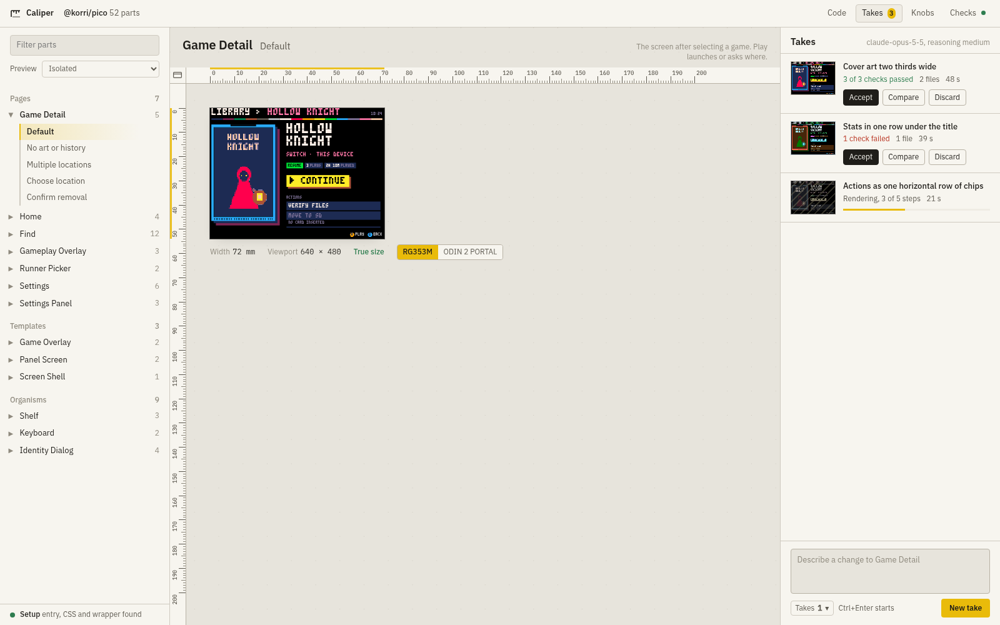
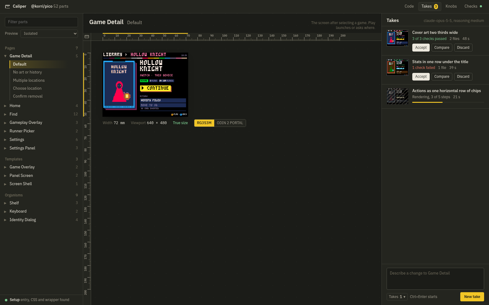
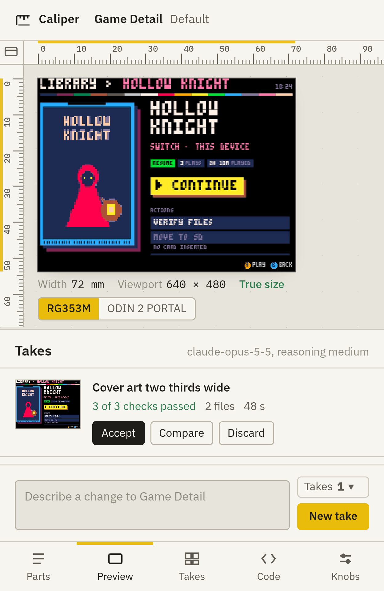
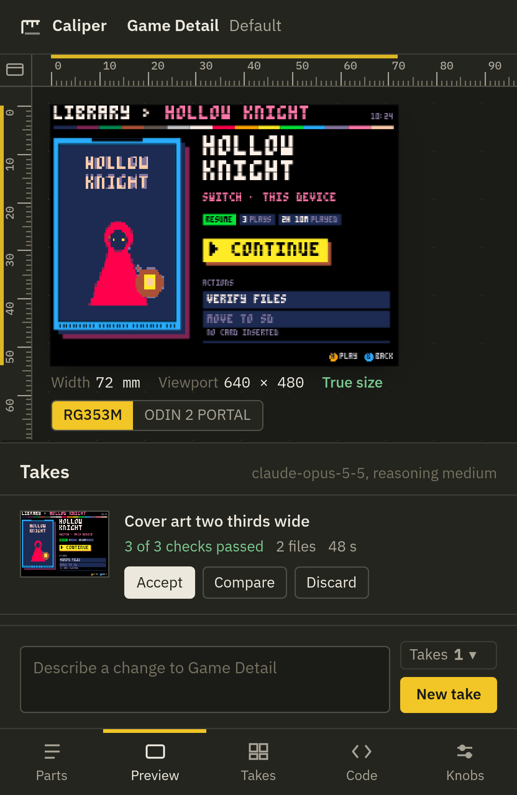
What legacy's Photoshop look promised, without the glass. The room is dark and the device is the only lit thing. A tool rail on the left, panels that float as opaque cards with one hard edge, and safelight amber for the current tool and a running take. Light mode turns the room into a lightbox.
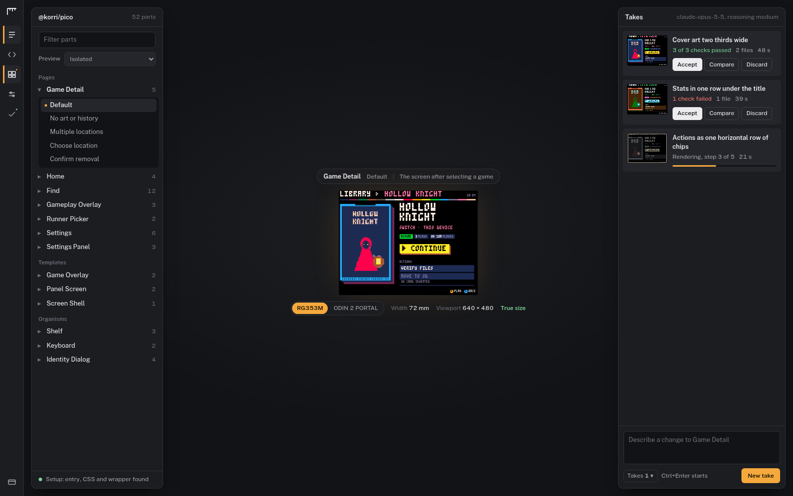
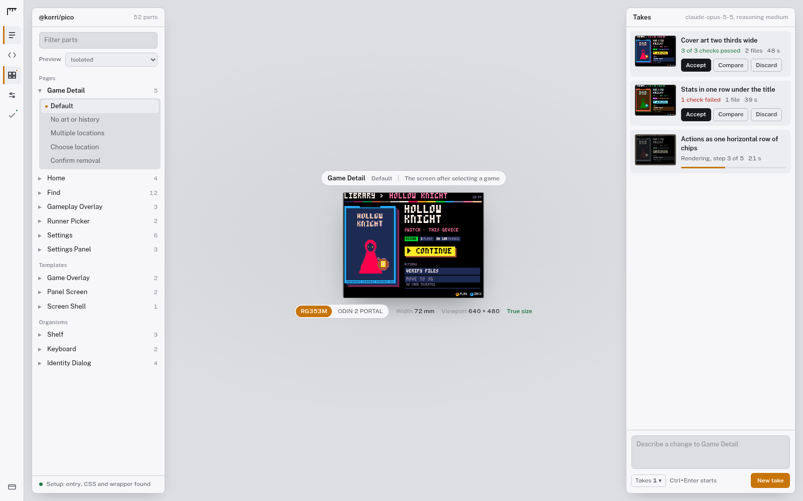
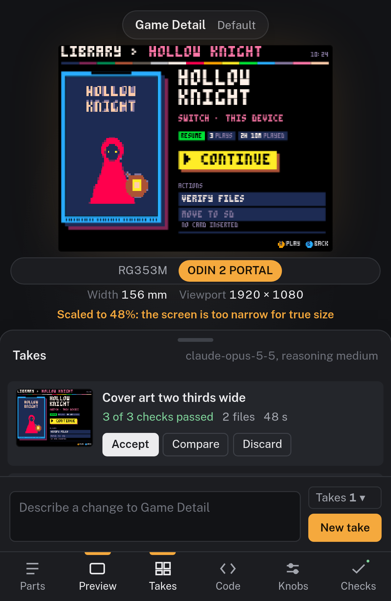
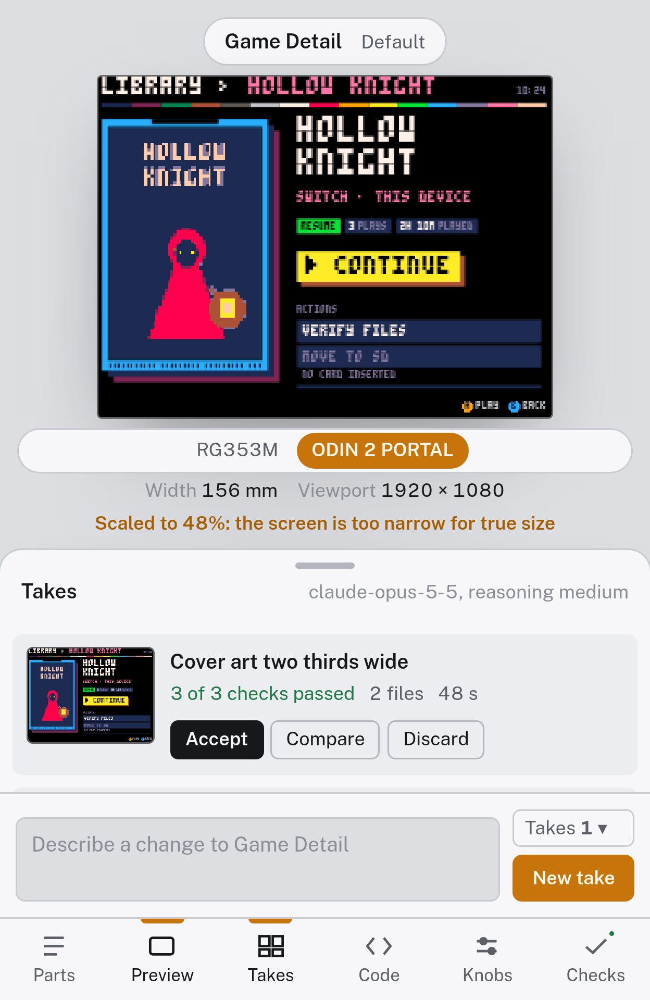
The chrome is a tiling window manager, because that is the desk it lives on. Every region is a tile with a title bar; the focused tile has a two-pixel border in the one accent; a status bar at the bottom names the workspaces and carries the readouts. On a phone each workspace is one full tile. No radius, no shadow.
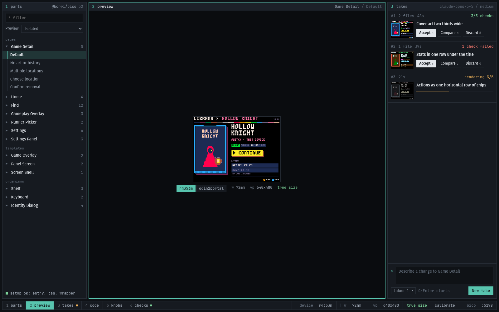
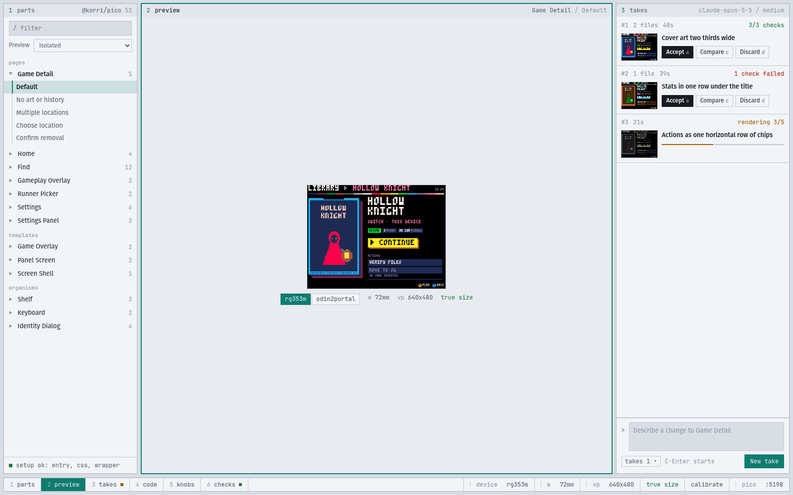
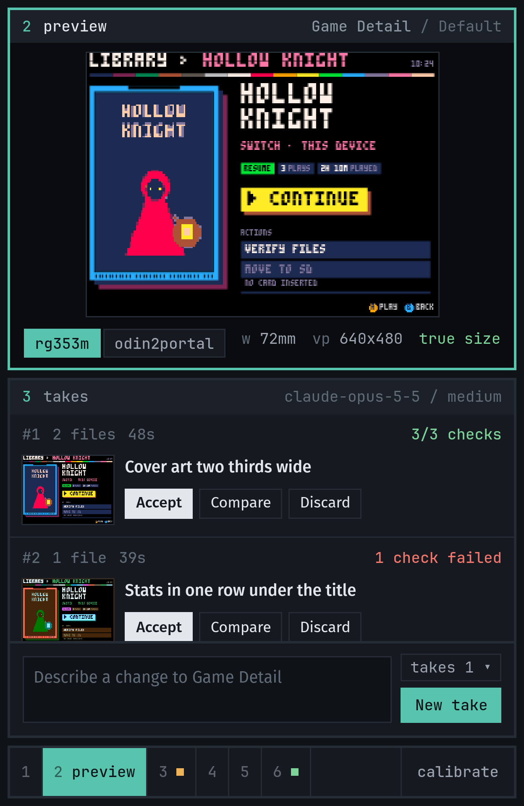
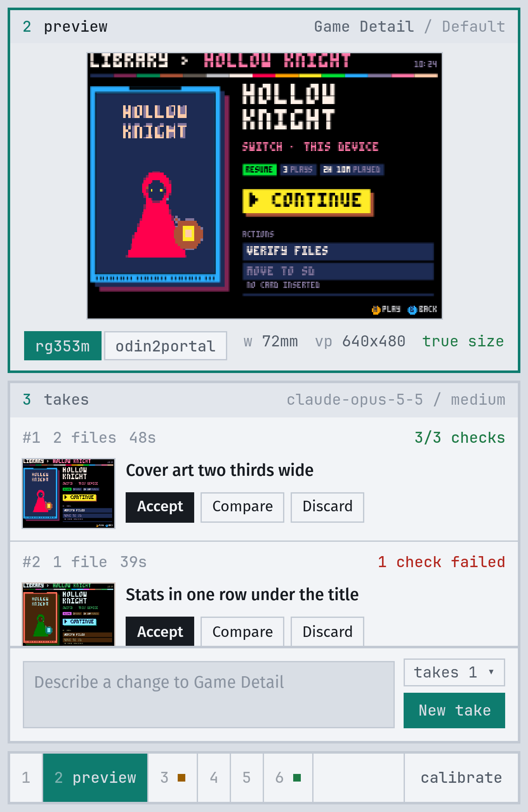